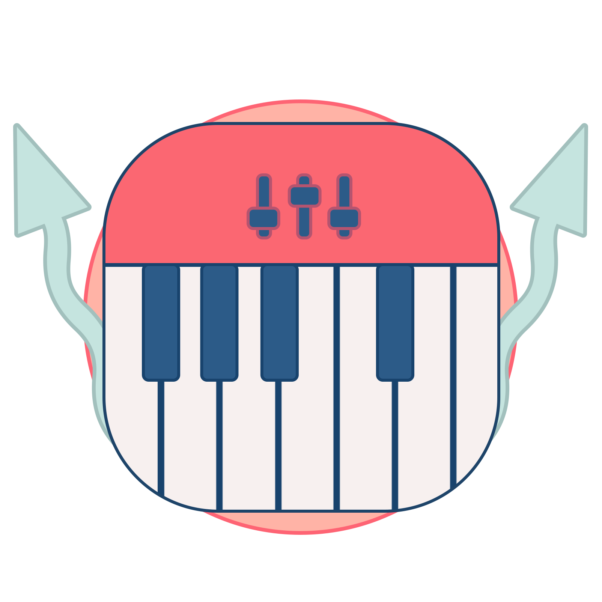

Brief introduction
Hello! I'm Nguyen from Vietnam - a 2nd student of College of International Management of Ritsumeikan Asia Pacific University (APU) . This page is created to submit the final project from my class Introduction to Internet for the Fall Semester 2020 , to apply what I have learnt during the course. Besides, this website is an inspiration from my friends who encouraged me to pursue programming as an advantage skill for my job hunting in the future. So, please enjoy! Hope you like it, professor! :))
Educational Background and Future Plan
 I have been studying in Vietnam for 12 years since primary to high school. After graduate, I chose Ritsumeikan Asia Pacific University (APU) to be my next destination. In this university, I have had opportunity to encounter various major as well as language subjects which (hopefully) benefits my career.
I have been studying in Vietnam for 12 years since primary to high school. After graduate, I chose Ritsumeikan Asia Pacific University (APU) to be my next destination. In this university, I have had opportunity to encounter various major as well as language subjects which (hopefully) benefits my career.
Social and Extracurricular Activities
I do consider myself an introvert and enjoy being at home. However, I really enjoy being a pianist of Accoustic Night - a Vietnamese music performance that is held every year. (What is Accoustic Night? See sidebar)